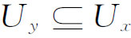
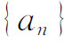
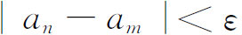
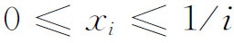
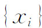
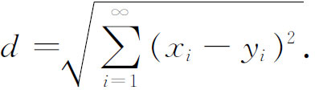

2．点集拓扑
从康托尔开创点集理论（第41章第7节）到若尔当、波莱尔和勒贝格扩展它（第44章第3～4节）的时候，点集理论本来并不涉及变换和拓扑性质。但是另一方面，拓扑所感兴趣的，是把点集作为一个空间看待。点集只是互不相关的一堆点，而空间则通过某种捆扎的概念使点与点之间发生关系；这是空间不同于点集的关键。例如欧几里得空间中距离这一概念就表明点与点之间有多远，尤其是使我们能定义一个点集的极限点。
我们已经谈过点集拓扑的起源（第46章第2节）。由于想要把康托尔的集合论和函数空间（即以函数作为点的空间，这在变分法中已经是习以为常的了）的研究统一起来，弗雷歇在1906年发动了抽象空间的研究。希尔伯特空间、巴拿赫空间的引进，泛函分析的兴起，更增加了把点集作为空间来研究的重要性。泛函分析中起作用的性质都是拓扑性质，主要因为序列的极限居重要的地位。再者，泛函分析的算子就是从一个空间到另一个空间的变换(1)。
弗雷歇指出，这捆扎概念不必就是欧几里得的距离函数。他引进了（第46章第2节）几种不同的概念，都能用来确定什么时候一个点是一个点序列的极限点。特别地，他推广了距离这个概念，引进了度量空间这一类空间。欧几里得平面就是一个度量空间。对于度量空间，说到一个点的邻域时，指的是离开这点不到某个量ε那么远的全部点。这些邻域是圆形的。我们也能用正方形的邻域。对于一个给定的点集，甚至不必引进度量，还能用一些方式来确定某些子集作为邻域。这样的空间叫做具有邻域拓扑的空间。这是度量空间的一个推广。豪斯多夫（Felix Hausdorff，1868—1942）在他的《点集论纲要》（Grundzügeder Mengenlehre，1914）中使用了邻域概念（这一概念，希尔伯特在1902年进行欧几里得平面几何对一种特殊的公理化研究方法时已经使用过），并且根据这个概念建立了抽象空间的完整理论。
豪斯多夫把拓扑空间定义为一个集合，连带着它的每一元素x所联系的一族子集Ux。这些子集叫做邻域，它们必须满足下列条件：
（a）每个点x至少有一个邻域Ux，每一个Ux含有这个点x。
（b）x的两个邻域的交含有x的一个邻域。
（c）如果y是Ux的一个点，则存在一个Uy使得

。（d）如果x≠y，则存在Ux与Uy，使得Ux·Uy＝0。
豪斯多夫还引进了两条可数性公理：
（a）对于每一个点x，子集Ux所组成的集是可数集。
（b）所有不同的邻域所组成的集是可数集。
点集拓扑的基础是若干基本概念的定义。邻域空间中一个点集的一个极限点是这样一个点，它的每一邻域都至少含有这集合的一个点。如果这集合的每个点都能被包围在只由这集合的一部分点所组成的一个邻域之中，这集合就是开集。如果一个集合含有它的所有极限点，它就是闭集。一个空间或一个空间的子集叫做紧致的，如果每一个无穷子集都有极限点。因此，通常的欧几里得直线上的点不成为一个紧致空间，因为相当于整数的点的无穷集没有极限点。如果一个集合不管怎样分成两个互不相交的子集，其中一个子集至少含有另一个的一个极限点，这个集合就是连通的。曲线y＝tan x不是连通的，但是曲线y＝sin 1/x加上y轴上的区间（－1，1）就是连通的。可分离性是弗雷歇在1906年的论文中引进的，这是另一个基本概念。如果一个空间就是它的一个可数子集的闭包（即子集本身加上它的极限点），它就叫做可分离的。
至此还能够引进连续变换和同胚的概念。连续变换通常有两个内容：对于一个空间的每一个点，对应着第二个空间或像空间的唯一的一个点；并且对于一个像点的任一给定的邻域，原来的点（或每一个原来的点，如果多于一点的话）有一个邻域，它的每一个点的像点都被包含在像空间的该给定的邻域里。这个概念不外是连续函数的ε-δ定义的一种推广，其中ε确定像空间中一点的邻域；而δ确定原来的一点的一个邻域。两个空间S和T之间的一个同胚是一个一一对应，并且两个方向（即从S到T和从T到S）都连续。点集拓扑的基本任务是发现在连续变换和同胚下保持不变的性质。上面提到的所有性质都是拓扑不变性。
豪斯多夫在度量空间的理论方面增添了许多成果。特别是在关于弗雷歇在他的1906年论文中所引进的完全性概念这方面。考虑一个度量空间中满足下列条件的点序列

：对于任意给定的ε，存在一个N，使得
对于大于N的所有m和n都成立。如果一个空间中的每一个满足这条件的序列都有极限点，这空间就是完全的。豪斯多夫证明了每一个度量空间能够并且只能够按一种方式扩展成一个完全的度量空间。抽象空间的引进提出了若干问题，而这些问题发动了许多研究工作。例如，如果一个空间是用邻域定义的，这个空间是否必然是可度量的？即是否能在这空间中引进一种度量，保持这空间的结构，使得极限点仍然是极限点？这问题是弗雷歇提出来的。乌雷松（Paul S．Urysohn，1898—1924）的一个结果说，每一个正规的拓扑空间是可度量的(2)。一个正规空间是这样一个空间，它的任意两个不相交的闭集都可以各自被包含在一个开集之中，而这两个开集不相交。他还证明了(3)一个相当重要的有关结果：每一个可分离的度量空间，即每一个具有一个稠密的可数子集的度量空间，同胚于希尔伯特方体的一个子集；方体即是以满足

的无穷序列
为点的空间，其中的距离定义为
我们已经注意到，维数（dimension）问题已经由康托尔在直线和平面之间的一一对应（第41章第7节）和装满一个正方形的皮亚诺曲线（第42章第5节）的证明中提出来了。弗雷歇（已经在研究抽象空间）和庞加莱已经看到需要给维数下一个定义，使它既可应用于抽象空间，又可以使直线和平面具有通常的维数。通常所采用的心照不宣的定义是，维数就是确定一个点所需要的坐标的个数。这个定义不适用于一般空间。
1912年，庞加莱给出一个递归定义(4)。一个连续统（一个闭的连通集）叫做n维的，如果它能分成两部分，其公共边界是由n－1维的连续统组成的。布劳威尔（1881—1966）指出这定义对于两叶的锥面不适用，因为一个点就分开这两叶。布劳威尔(5)、乌雷松(6)和门格尔（Karl Menger，1902—1985）(7)改进了庞加莱的定义。
门格尔和乌雷松的定义相似，人们都认为，现在所采用的定义是他们两人的。他们的概念是规定一个局部的维数。门格尔的提法如下：空集定义为－1维的。我们说一个集合M在一点P处是n维的，如果n是这么一个最小的数，使得存在P的任意小的邻域，它们在M中的边界的维数小于n。集合M叫做n维的，如果它在它的所有点处至多是n维的，而在至少某个点处是n维的。
另一个广泛采用的定义是勒贝格的(8)。一个空间是n维的，如果n是这样的最小数，即直径任意短的闭集所组成的覆盖都含有属于这覆盖的闭集中n＋1个集的公共点。根据这些定义的任一个，欧几里得空间都有恰当的维数，并且任意空间的维数都是拓扑不变的。
维数论中的一个关键的结果是门格尔［《维数论》（Dimensionstheorie），1928，第295页］和内贝林（A．Georg Nöbeling，1907—2008）的一个定理(9)。这个定理说，每一个紧致的度量空间同胚于2n＋1维的欧几里得空间中的某一子集。
若尔当和皮亚诺的工作所引起的另一个问题是曲线本身的定义（第42章第5节）。有了维数论方面的工作，才能够做出答案。门格尔(10)和乌雷松(11)定义曲线为一维的连续统，连续统是闭的连通集。（这个定义要求把抛物线那样的开曲线用一个无穷远点封闭起来。）这个定义排除了装满空间的曲线，并反映了曲线在同胚下不变的这一性质。
点集拓扑这一学科继续很活跃。对于各种类型的空间的公理基础，引进变种、特殊化以及推广，都是比较容易的。曾经引进了成百个概念，证明了成百个定理，虽然这些概念的最终价值大多数是可疑的。跟在别的领域中一样，数学家们毫不迟疑地投身于点集拓扑的纵深发展。